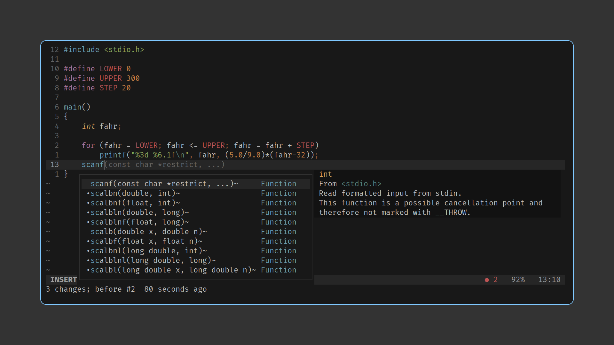

Windows
Clash：网络代理。
Windows Terminal：终端模拟器，具备多选项卡、窗格等功能。
Powertoys：实用工具，包括键盘管理器、保持唤醒、颜色选择器、屏幕标尺、批量重命名、图像大小调整器、鼠标实用程序等。
WSL：Linux 虚拟机。
Linux
fish
Note
安装 fish：
sudo apt-add-repository ppa:fish-shell/release-3
sudo apt update
sudo apt install fish切换默认 shell 为 fish（需重启）：
chsh -s /usr/bin/fishfish 的优势在于开箱即用的语法高亮、自动提示及 Tab 键补全。 虽然兼容 bash 语法的 zsh 也可通过脚本实现上述功能，但其速度慢于 fish。
fish 语法不同于 bash，这点需要适应。例如设置环境变量：
# bash
export PATH=/bin:$PATH
# fish
set -x PATH /bin $PATH常用工具
ripgrep、fd、bat
Note
安装 ripgrep、fd、bat
sudo apt install ripgrep fd-find bat此三者分别为 grep、find 和 cat 的替代，具有更好性能及易用性。
fzf
Note
安装 fzf：
git clone --depth 1 https://github.com/junegunn/fzf.git ~/.fzf
~/.fzf/install设置 fzf 快捷键绑定：
# Set up fzf key bindings
fzf --fish | sourcefzf (fuzzy finder) 是一个命令行模糊查找工具，用于快速搜索和过滤大量文本数据。
Neovim
Note
安装 Neovim：
mkdir -p ~/.local/bin
wget -O ~/.local/bin/nvim https://github.com/neovim/neovim/releases/download/nightly/nvim.appimage
chmod +x ~/.local/bin/nvim编辑 ~/.config/fish/config.fish，添加上述路径至环境变量：
set -x PATH ~/.local/bin $PATH下载 Neovim 配置：
git clone --depth 1 https://github.com/GlekoMa/nvim
mv nvim ~/.config/nvim进入 nvim，执行 PlugInstall。
Neovim 是 vim 的分叉，拥有更活跃的社区。 Neovim/vim 界面没有多余组件，只需掌握 hjkl（移动光标）、i（插入）、<Esc>（返回普通模式）、:w（保存）和 :q（退出）即可使用。输入:Tutor 查看并练习更多操作。
